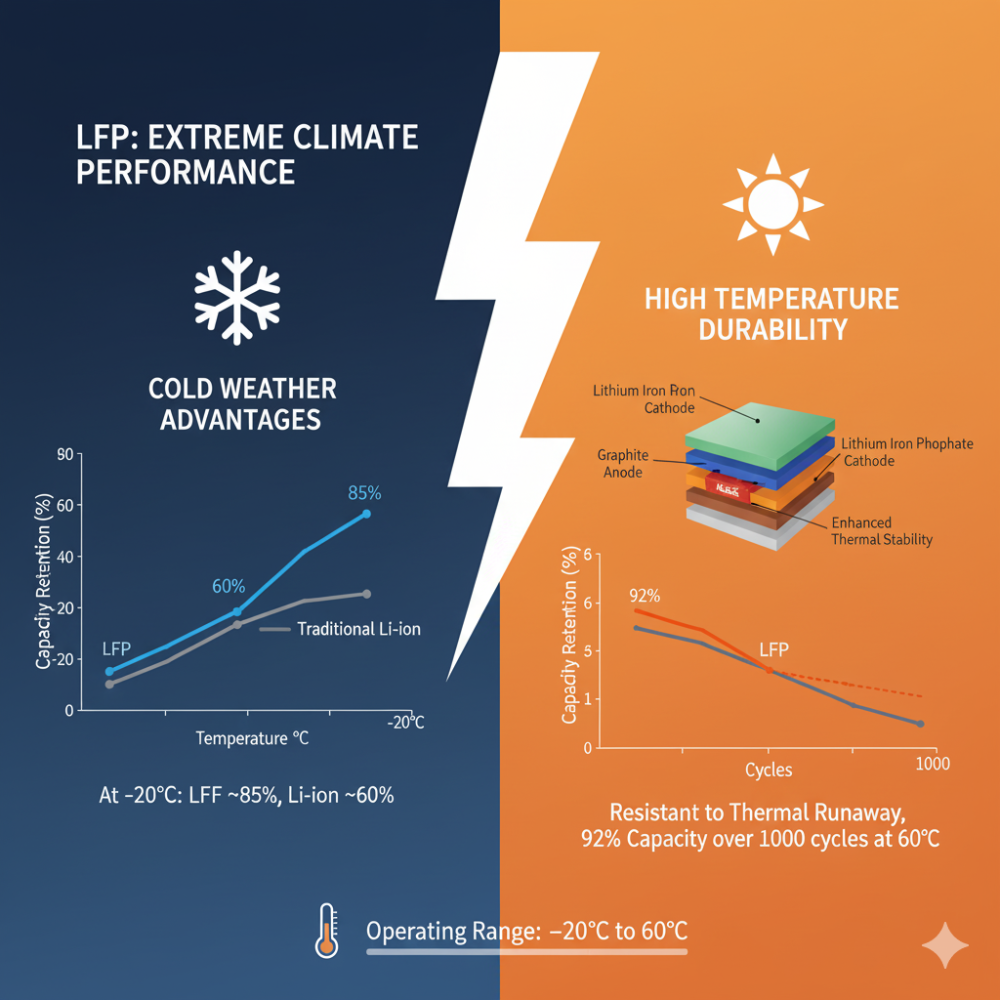
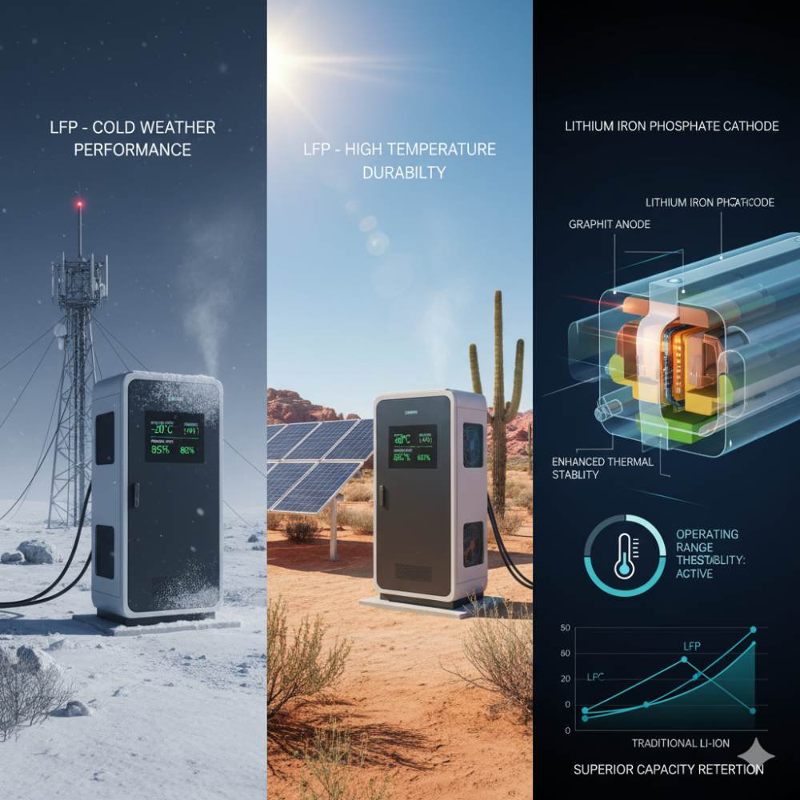
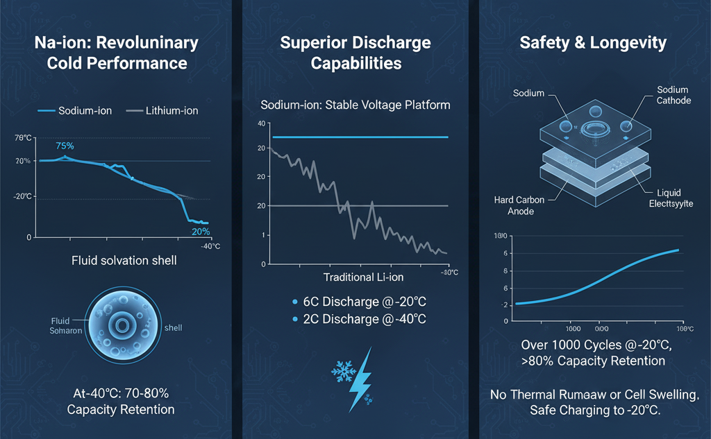
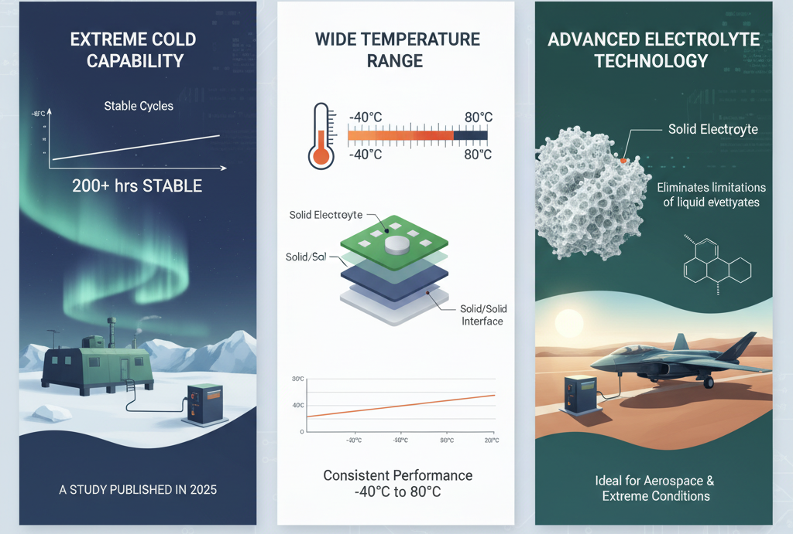
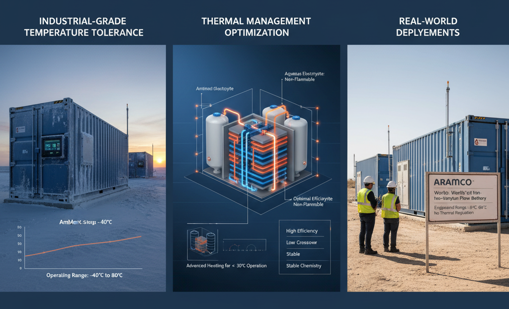
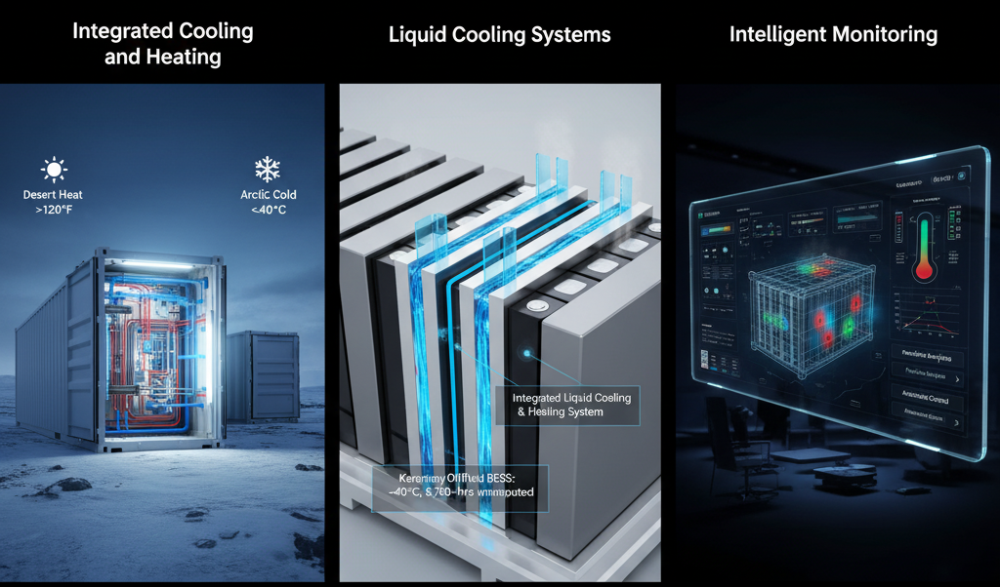
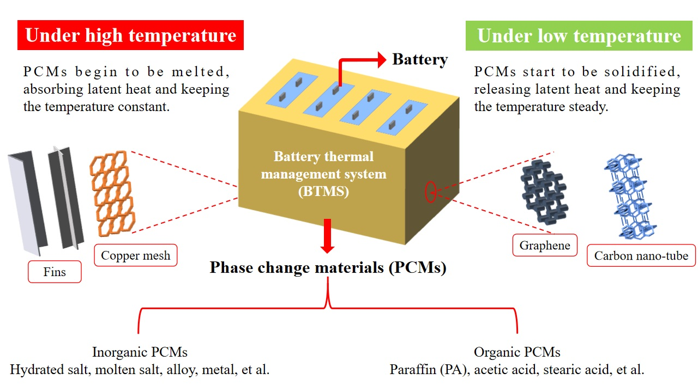
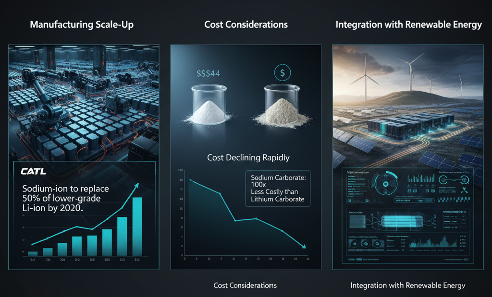

Battery Energy Storage Systems (BESS) are rapidly evolving beyond traditional lithium-ion technologies to meet the demanding requirements of extreme climate conditions. As global temperatures fluctuate more dramatically and energy infrastructure faces increasing climate pressures, new battery chemistries are emerging that can maintain reliable performance in both scorching heat and freezing cold environments.
The Climate Challenge for Energy Storage
Climate volatility is intensifying worldwide, with energy infrastructure increasingly deployed in regions experiencing extreme weather conditions including hurricanes, heatwaves, floods, and Arctic-level cold. Traditional lithium-ion batteries struggle significantly in these conditions - experiencing capacity losses of up to 40% in freezing temperatures and accelerated degradation in extreme heat exceeding 120°F.
The challenge is particularly acute for grid-scale deployments. During Winter Storm Uri in Texas in February 2021, power grid failures resulted in over 4.5 million residents losing electricity and economic damage of nearly $195 billion. Since then, Texas has rapidly expanded its battery storage capacity from around 200 MW in 2020 to more than 9 GW by late 2024, highlighting the critical need for climate-resilient storage technologies.
Lithium Iron Phosphate (LFP): Enhanced Temperature Tolerance
Operating Range and Performance: Lithium Iron Phosphate (LFP) batteries have emerged as a leading chemistry for extreme climate applications, offering superior thermal stability compared to traditional lithium-ion chemistries. These batteries can operate effectively across a broad temperature range from -20°C to 60°C (-4°F to 140°F), with optimal performance achieved between 0°C and 45°C (32°F and 113°F).
Cold Weather Advantages: In cold climates, LFP batteries demonstrate remarkable resilience. While traditional lithium-ion batteries may experience 60% capacity retention at -20°C, LFP batteries maintain approximately 85% capacity at the same temperature. The chemical reactions within LFP cells slow down less dramatically in cold conditions, and the batteries recover their full performance when temperatures rise.

High Temperature Performance: LFP batteries excel in high-temperature environments due to their exceptional thermal stability. They are highly resistant to thermal runaway - the dangerous condition where batteries overheat uncontrollably. At elevated temperatures up to 60°C, LFP batteries can deliver sustained performance, with some systems maintaining 92% of initial capacity over 1000 cycles.

Sodium-ion Batteries: Cold Weather Champions
Revolutionary Cold Performance: Sodium-ion (Na-ion) batteries represent a breakthrough in cold weather energy storage. These batteries can maintain 70-80% of their room temperature capacity at -40°C, significantly outperforming lithium-ion alternatives. The larger sodium ions create different solvation shells that resist freezing, while the electrolyte system remains more fluid at low temperatures.
Superior Discharge Capabilities: Recent testing demonstrates that sodium-ion batteries can handle 6C discharge rates even at -20°C and maintain 2C discharge capability at -40°C. This performance far exceeds traditional lithium batteries, which struggle to deliver meaningful power in similar conditions. The stable voltage platform of sodium-ion chemistry ensures consistent power delivery as temperatures drop.

Safety and Longevity: Sodium-ion batteries maintain their safety characteristics even at -40°C, showing no thermal runaway, gas generation, or cell swelling. Testing has shown these batteries can complete over 1,000 charge-discharge cycles at -20°C while retaining over 80% of their original capacity. Unlike lithium-ion batteries, sodium-ion cells can be charged down to -20°C without permanent damage.
Solid-State Batteries: Next-Generation Temperature Resilience
Advanced Electrolyte Technology: All-solid-state batteries (ASSBs) employing solid-state electrolytes offer promising solutions for extreme temperature operation. These systems avoid the limitations of liquid electrolytes, such as reduced solubility and increased viscosity at low temperatures. The solid/solid interface in ASSBs eliminates the problematic desolvation processes that occur in traditional batteries.
Extreme Cold Capability: Recent developments have produced ASSBs capable of maintaining stable charge/discharge cycles for over 200 hours at -60°C. A study published in 2025 demonstrated solid-state batteries designed specifically for operation under extreme conditions, including polar expeditions and aerospace applications.

Wide Temperature Range: Solid-state batteries can operate across a wider temperature range than liquid-based systems, with some designs functioning effectively from -40°C to 80°C without compromising performance or safety. This broad operating window makes them ideal for applications in extreme weather conditions where conventional batteries would fail.
Vanadium Redox Flow Batteries: Robust Grid-Scale Solutions
Industrial-Grade Temperature Tolerance: Vanadium Redox Flow Batteries (VRFBs) have demonstrated exceptional performance across extreme temperature ranges. These systems can operate safely from -40°C to 80°C without compromising performance or safety, making them ideal for harsh environments. The aqueous electrolyte system remains non-flammable throughout this temperature range.
Thermal Management Optimization: For optimal efficiency, VRFBs should be maintained within 10°C to 40°C, where they achieve high efficiency, weak side reactions, high electrolyte stability, and low crossover. However, advanced thermal management systems can extend operational ranges, with some installations successfully operating at temperatures below -30°C using integrated heating systems.

Real-World Deployments: Recent projects have demonstrated VRFB resilience in extreme conditions. Aramco commissioned the world's first iron-vanadium flow battery engineered specifically for Saudi Arabia's extreme climate conditions, operating across -8°C to 60°C without thermal regulation requirements.
Advanced Thermal Management Systems
Integrated Cooling and Heating: Modern BESS deployments incorporate sophisticated thermal management systems designed for extreme weather resilience. These systems combine advanced cooling and heating mechanisms to maintain optimal battery performance in conditions ranging from desert heat exceeding 120°F to Arctic cold below -40°C.
Liquid Cooling Systems: High-performance installations increasingly rely on liquid cooling systems featuring cold plate heat sinks and integrated liquid cooling/heating systems. A prime example is an 18.43 MWh BESS at China's Karamay Oilfield, which operates reliably in temperatures as low as -40°C using an integrated liquid cooling and heating system. This system has logged over 8,760 hours of uninterrupted operation under harsh blizzard conditions.

Intelligent Monitoring: Advanced thermal management systems incorporate real-time temperature monitoring, predictive analytics, and automated control strategies. These systems can monitor temperature and other parameters in real-time, predict potential thermal issues, and optimize cooling system operation to ensure optimal performance and safety.
Hybrid and Composite Solutions
Multi-Chemistry Systems: Emerging hybrid battery systems combine different chemistries to optimize performance across temperature ranges. These systems can automatically switch between different cell types based on temperature conditions, maximizing efficiency and reliability.
Phase Change Materials: Advanced thermal management solutions incorporate Phase Change Materials (PCMs) to provide passive thermal regulation. Hybrid systems combining lithium-ion batteries with metal hydride tanks and PCMs offer enhanced heat absorption and dissipation, overcoming limitations of standalone thermal management systems.

Future Developments and Market Outlook
Manufacturing Scale-Up: The sodium-ion battery market is experiencing rapid expansion, with CATL and other manufacturers scaling production significantly. Industry projections suggest sodium-ion batteries could replace up to half the market of lower-grade lithium-ion batteries by 2030.
Cost Considerations: While many advanced chemistries currently carry premium pricing, costs are declining rapidly with scale. Sodium carbonate, the raw material for sodium-ion batteries, costs up to 100 times less than lithium carbonate. This cost advantage, combined with superior cold-weather performance, makes sodium-ion technology increasingly attractive for grid-scale deployments.

Integration with Renewable Energy: Future thermal management systems are being designed to handle the intermittent nature of renewable energy sources and ensure stable operation of integrated systems. As BESS technologies increasingly integrate with solar and wind power, thermal management requirements become more complex but also more critical for system reliability.
Conclusion
The evolution of BESS chemistries for extreme climates represents a fundamental shift in energy storage capabilities. From sodium-ion batteries maintaining 70% capacity at -40°C to solid-state systems operating reliably at -60°C, and vanadium flow batteries withstanding -40°C to 80°C ranges, new technologies are proving that climate-resilient energy storage is not just possible but commercially viable.